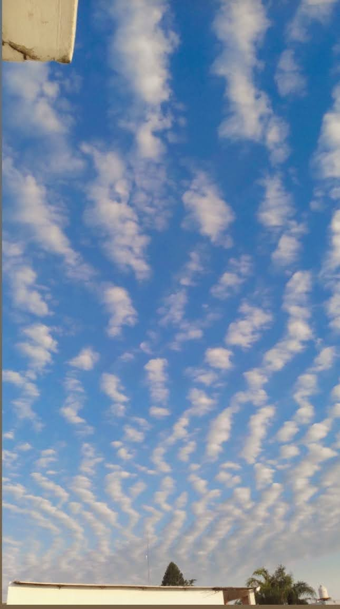

Los altocúmulos son nubes que vienen en grupos.
Son nubes de nivel medio, entre 2 y 8 km sobre la superficie de la tierra. Se presenta como parches o capas de nubes blancas y/o grises con sombreado, compuesto de láminas, masas redondeadas, rollos, que a veces son parcialmente fibrosas o difusas.
El nombre "altocúmulo" deriva del latín altum, que significa "altura" y cumulus, que significa "acumulación, montón, pila".
Se componen principalmente por gotitas de agua, por lo que tienen una baja transparencia.
Los altocúmulos a veces se pueden confundir con cirrocúmulos, pero si tienen sombreado son por definición altocúmulos